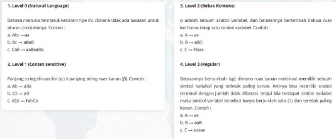
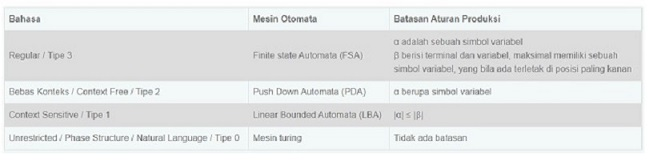

-

Mappatunru Production
Salamaki To Pada Salama
-

Mappatunru Production
Taro Ada Taro Gau
-

Mappatunru Production
Makkiade' Na Malempu'
"Chomsky Hierarki Bagi Grammar Komputasi"
Hierarki Chomsky merupakan tata Bahasa (Grammar) bisa didefinisikan secara formal sebagai kumpulan dari himpunan - himpunan variable, simbol-simbol terminal, simbol awal, yang dibatasi oleh aturan - aturan produksi. Pada tahun 1959 seorang ahli bernama Noam Chomsky melakukan pengelompokkan tingkatan bahasa menjadi empat, yang disebut dengan Hirarki Chomsky.
Noam Chomsky mengelompokkan bahasa menjadi 4 (empat) tingkatan. Yaitu, bahasa unrestricted / Natural, bahasa Context Sensitive, bahasa bebas konteks (Context Free), dan bahasa regular. Penggolongan tersebut bisa dilihat dari tabel dibawah ini :

Tabel diatas merupakan keterangan mengenai setiap bahasa, mulai dari bahasa tipe 3 sampai kepada bahasa tipe 0. Berikut ini akan dijelaskan dengan lengkap mengenai masingmasing bahasa mulai dari tipe 3 sampai tipe 0 , contoh, mesin otomatanya, serta aplikasi-aplikasi yang mungkin dari masing-masing mesin otomata ini.
Dalam hirarki chomsky, terdapat empat level bahasa yaitu level 0 (Natural Language), level 1 (Contex sensitive), level 2 (Bebas Konteks), dan level 3 (Regular). Dari setiap leveltersebut terdapat aturan-aturan produksi yang membatasinya. Contoh-contoh aturan produksi untuk setiap level bahasa :

Tata bahasa (grammar) bisa didefinisikan secara formal sebagai kumpulan dari himpunan-himpunan variabel, simbol-simbol terminal, simbol awal yang dibatasi oleh aturan-aturan produksi.
Aturan produksi merupakan pusat dari tata bahasa, yang menspesifikasikan bagaimana suatu tata bahasa melakukan transformasi suatu string ke bentuk lainnya. Semua aturan produksi dinyatakan dalam bentuk : “ α→β “ ( alpha menghasilkan betha atau alpha menurunkan betha) α menyatakan simbol-simbol pada ruas kiri aturan produksi. β menyatakan simbol-simbol pada ruas kanan aturan produksi